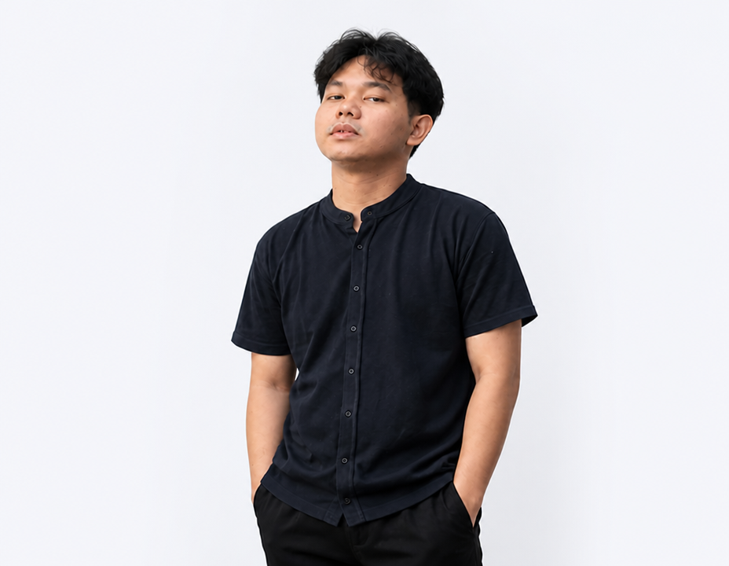

PORTOFOLIO PENDIDIK
Halo, Saya
Halo, Saya
Aidil Isa, S.Pd., M.Pd.
Guru Bahasa Indonesia di SMPN 3 Sungayang, BatuSangkar. Berdedikasi dalam mengembangkan potensi literasi, kebahasaan, dan karakter generasi muda Indonesia melalui pembelajaran inovatif.

Pendidik Profesional
SMPN 3 Sungayang